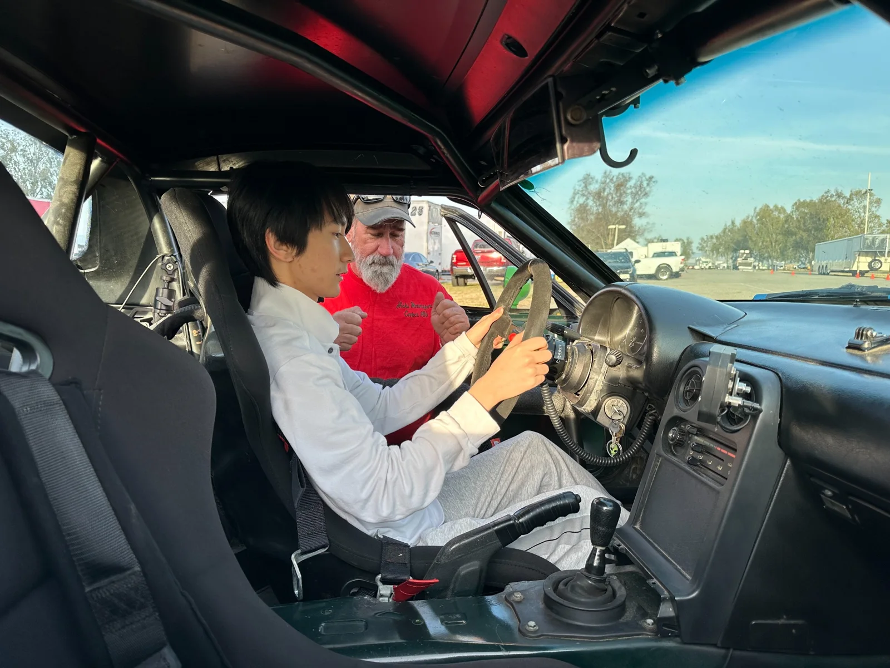
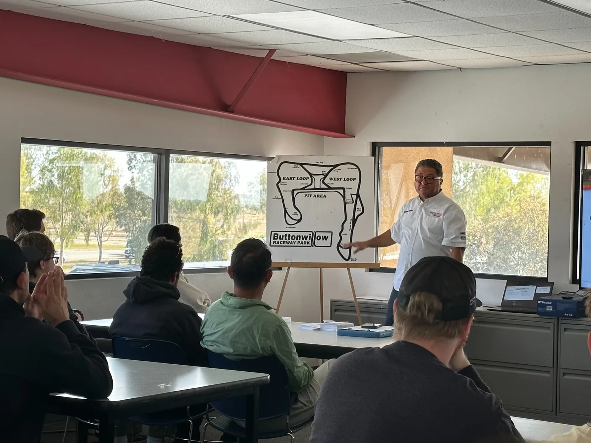
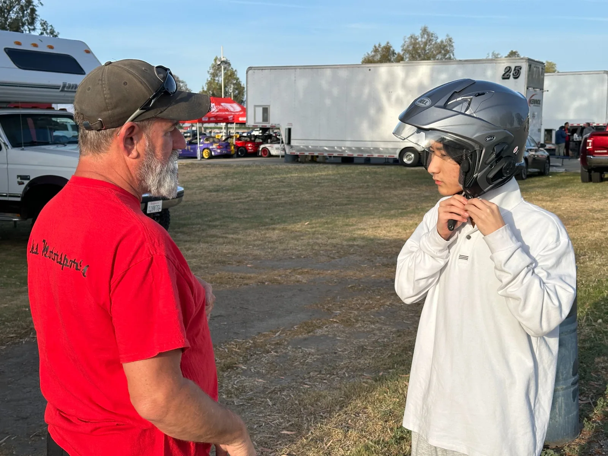
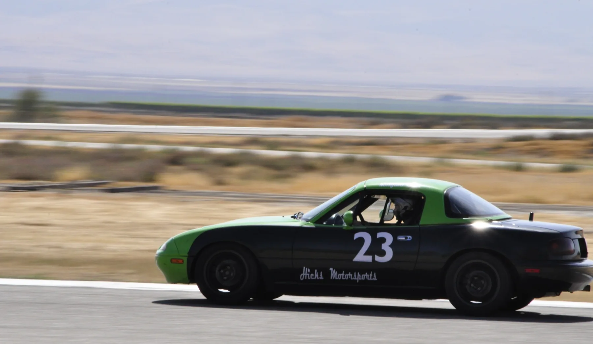
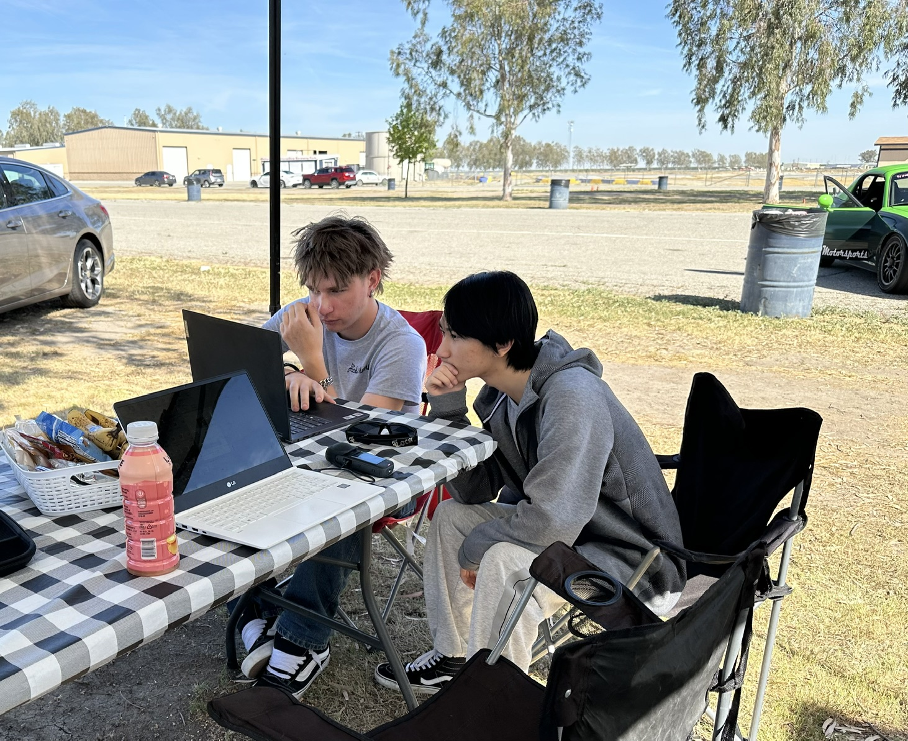
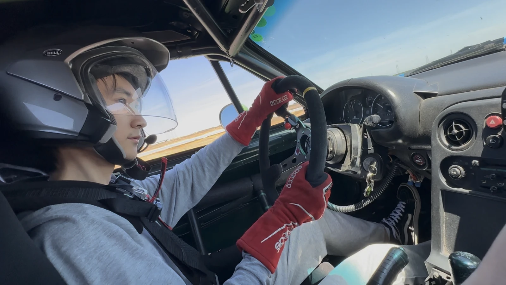
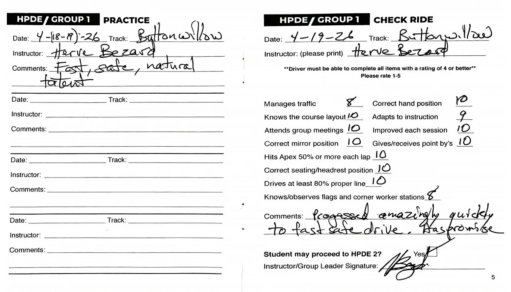

01 / MOTORSPORT
Learn. Drive.
Measure.
At Buttonwillow, every lap was a chance to test an observation and make the next one more deliberate.

BUTTONWILLOW · APRIL 2026
From instruction to independent analysis.
Training began with classroom guidance and coaching in the car. The next step was to turn driving impressions into questions I could examine with AiM GPS data.
The comparison on this site uses one morning lap and one afternoon lap from April 20. It shows a 7.401-second difference and provides a starting point for more precise study.
Explore the data ↗





ON TRACK / VIDEO
Driving footage
NEXT / THE ENGINEERING QUESTION